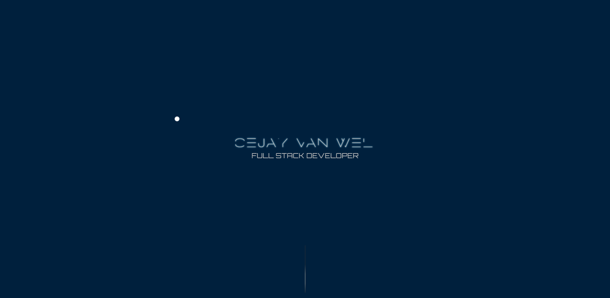

Voor mijn portfolio ben ik gaan zoeken naar portfolio's van andere ontwikkelaars en designers. Met in het specifiek full stack developers, omdat ik mezelf uiteindelijk met diezelfde titel op de markt wil zetten. Ik heb portfolio's gezien waarbij mensen hun ontwikkelaar en designer kant op hun website gescheiden houden, maar ook gezien dat ze deze twee aspecten juist heel mooi combineerde.
Andere portfolio's die ik heb gezien doken gelijk in de projecten die zij hebben gedaan en met welke talen/libraries zij kunnen werken. Daarbij stond dit mooi en overzichtelijk geordend op hun websites, hiermee toonde zij aan waar ze toe in staat zijn om zich op die manier te verkopen aan eventuele opdrachtgevers. Weer bij andere zag je een mooi gevisualiseerde website met in een soort van cartoon thema aan gegeven hoe hoog zij bepaalde skills beoordeelde van zichzelf.
Door een aantal van deze portfolio's heb ik met laten inspireren om een mooie en schone landingssectie te maken waarvandaan je naar onder scrolt om een klein intro te lezen en verder mijn projecten te zien.
Voor mijn portfolio heb ik als wat schetsen gemaakt om voor mezelf globaal duidelijk te krijgen hoe ik mijn portfolio eruit wil laten zien
Bij de designs die ik heb gemaakt in Adobe XD heb ik nog wat aanpassingen gemaakt en een keer iets anders uit geprobeerd. Dit om te kijken of het er beter van uit ging zien.
Ten slotte nog een aantal screenshots van wat mijn portfolio uiteindelijk geworden is.
